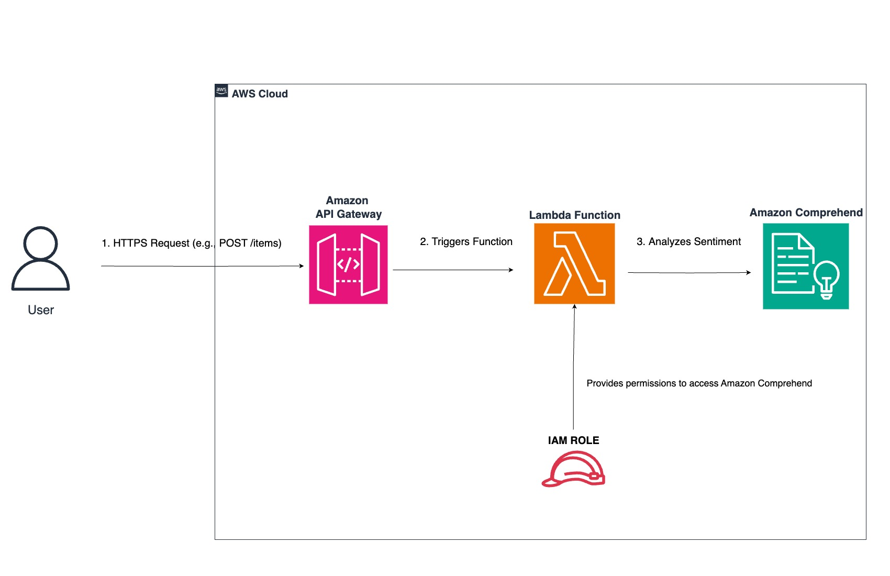

Project 5: An AI-Powered Sentiment Analysis API
Integrating a serverless API with Amazon Comprehend to perform real-time natural language processing.
The Goal
The goal of this project was to build an intelligent API that could analyze the sentiment of any given text. This demonstrates the power of integrating AWS's pre-trained AI models into a serverless application, allowing for sophisticated analysis without building or training any models from scratch.
The Architecture
This project builds upon the serverless API pattern, swapping the database for a managed AI service. The entire architecture is event-driven and requires zero server management.
Key components include:
- Amazon API Gateway: Provides the public HTTPS endpoint that receives text data for analysis.
- AWS Lambda: Runs the Python code that receives the text from API Gateway and passes it to the AI service.
- Amazon Comprehend: A managed Natural Language Processing (NLP) service that performs the actual sentiment analysis (Positive, Negative, Neutral) on the text.
- IAM Role: Provides the Lambda function with the secure, least-privilege permissions needed to call the Amazon Comprehend service.
The Test: Analyzing Text in Real Time
After deploying the API, I tested it using the `curl` command-line tool. I sent various text samples (positive, negative, and neutral) in a `POST` request and successfully received a JSON response containing the correct sentiment and confidence scores, proving the end-to-end integration was working perfectly.